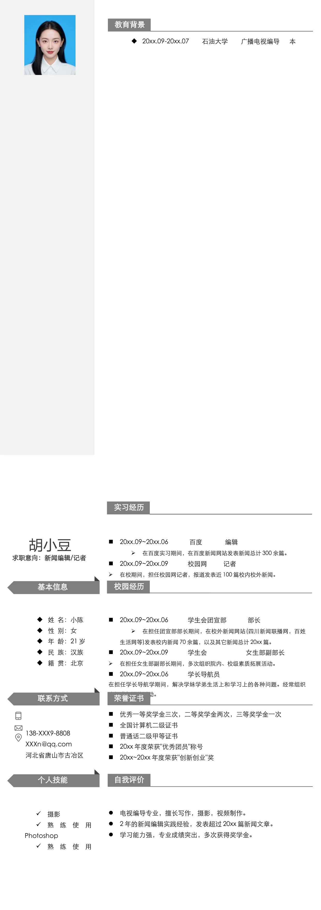

•
20xx.09-20xx.07 石油大学 广播电视编导 本
教育背景
20xx.09~20xx.06
百度
编辑
•
在百度实习期间，在百度新闻网站发表新闻总计300 余篇。
20xx.09~20xx.09 校园网 记者
•
在校期间，担任校园网记者，报道发表近100 篇校内校外新闻。
优秀一等奖学金三次，二等奖学金两次，三等奖学金一次
全国计算机二级证书
普通话二级甲等证书
20xx 年度荣获"优秀团员"称号
20xx~20xx 年度荣获"创新创业"奖
138-XXX9-8808
XXXn@qq.com
河北省唐山市古冶区
•
电视编导专业，擅长写作，摄影，视频制作。
•
2 年的新闻编辑实践经验，发表超过20xx 篇新闻文章。
•
学习能力强，专业成绩突出，多次获得奖学金。
20xx.09~20xx.06
学生会团宣部
部长
•
在担任团宣部部长期间，在校外新闻网站(四川新闻联播网，百姓
生活网等)发表校内新闻70 余篇，以及其它新闻总计20xx 篇。
20xx.09~20xx.09 学生会 女生部副部长
•
在担任女生部副部长期间，多次组织院内、校级素质拓展活动。
20xx.09~20xx.06 学长导航员
在担任学长导航学期间，解决学妹学弟生活上和学习上的各种问题。经常组织
班级进行课外活动。
基本信息
•
姓 名：小陈
•
性 别：女
•
年 龄：21 岁
•
民 族：汉族
•
籍 贯：北京
求职意向：新闻编辑/记者
•
摄影
•
熟
练
使
用
Photoshop
•
熟
练
使
用
胡小豆
联系方式
个人技能
校园经历
荣誉证书
自我评价
实习经历